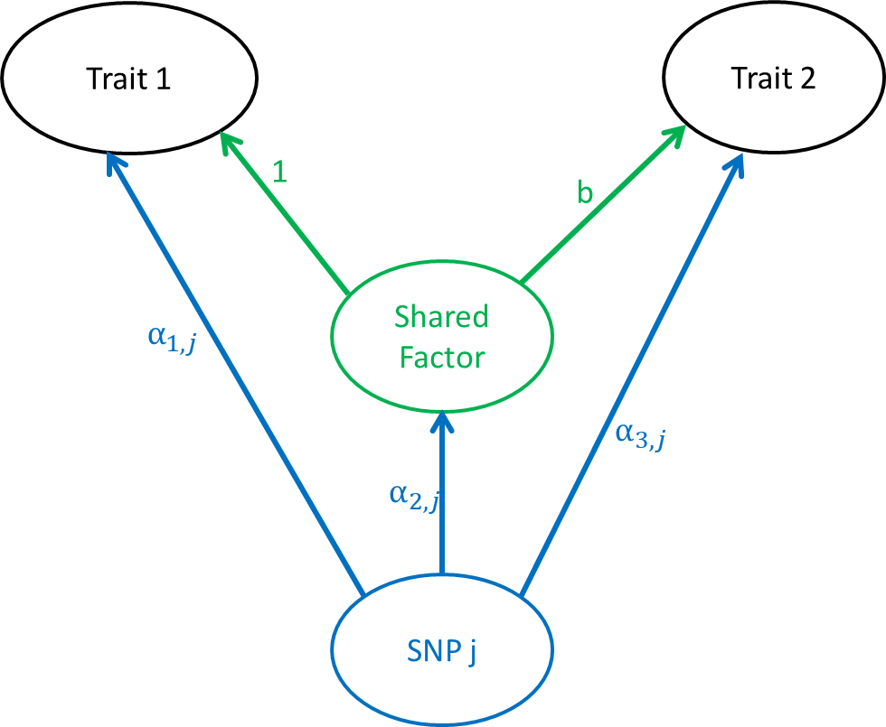

After some discussion, we agreed that the way we have modeled the distribution of effect sizes for the shared factor is conceptually unsatisfying for the following reasons: (I will abbreviate traist 1 and 2 as T1 and T2 and the shared factor as F)
These qualities give a certain amount of assymmetry to the model. Here I introduce a slight variation that addresses some of these issues. We begin with symmetric model below:

Each SNP can effect any of the three nodes in the graph and we have yet to impose constraints on the effect sizes. The parameters we are most interested in are
In order to fit the model, we need to make some assumptions about the distributions of \(\alpha_1\), \(\alpha_2\), and \(\alpha_3\).
I first add the constraint that each SNP may effect only one of the three nodes. This means that any SNP that effects both T1 and T2 does so by acting through F. I make this constraint because it drastically simplifies the distirbution of \(\alpha_1\), \(\alpha_2\), and \(\alpha_3\). This assumption is likely to be wrong in many cases. However, I have found fitting in our preivous models that the proportion of SNPs estimated to act on multiple nodes is very small. We introduce two new variables:
Having made the first assumption, we now only need to model three indepenent distributions of \(\alpha_{k,j} \vert Z_{k,j} = 1\). Ket \(\sigma_1, \dots, \sigma_{L}\) be an increasing grid of non-zero variance parameters. We model \[ \alpha_{k,j} \vert Z_{k,j} =1 \sim \sum_{l=1}^{L} \pi_{k,l} N(0, \sigma_l^2).\]
Without going into details discussed elsewhere, we can write the likelihood of \((\hat{\beta}_{1,j}, \hat{\beta}_{2,j})\) as
\[ P\left( \begin{pmatrix}\hat{\beta}_{1j}\\ \hat{\beta}_{2j}\end{pmatrix}; \rho, b, q, s_{1j}, s_{2j} \right) = \gamma_0 N\left(\begin{pmatrix}\hat{\beta}_{1j}\\ \hat{\beta}_{2j}\end{pmatrix}; \begin{pmatrix}0\\0\end{pmatrix},\begin{pmatrix}s_{1,j}^2 & \rho s_{1,j} s_{2,j} \\ \rho s_{1,j} s_{2,j} & s_{2,j}^2\end{pmatrix} \right) + \\ \gamma_1 \sum_{l=1}^L \pi_{1,l} N\left(\begin{pmatrix}\hat{\beta}_{1j}\\ \hat{\beta}_{2j}\end{pmatrix}; \begin{pmatrix}0\\0\end{pmatrix}, \begin{pmatrix}\sigma_l^2 + s_1^2 & \rho s_{1,j} s_{2,j} \\ \rho s_{1,j} s_{2,j}& s_{2,j}^2\end{pmatrix} \right) + \\ \gamma_2 \sum_{l=1}^L \pi_{2,l} N\left(\begin{pmatrix}\hat{\beta}_{1j}\\ \hat{\beta}_{2j}\end{pmatrix}; \begin{pmatrix}0\\0\end{pmatrix}, \begin{pmatrix}\sigma_l^2 + s_1^2 & \sigma_l^2b + \rho s_{1,j} s_{2,j} \\ \sigma_l^2b + \rho s_{1,j} s_{2,j}& \sigma_l^2b^2 + s_{2,j}^2\end{pmatrix} \right) + \\ \gamma_3 \sum_{l=1}^L \pi_{3,l} N\left(\begin{pmatrix}\hat{\beta}_{1j}\\ \hat{\beta}_{2j}\end{pmatrix}; \begin{pmatrix}0\\0\end{pmatrix}, \begin{pmatrix}s_1^2 & \rho s_{1,j} s_{2,j} \\ \rho s_{1,j} s_{2,j}& \sigma_l^2 + s_{2,j}^2\end{pmatrix} \right) \]
I have thought about fitting this model in the same way as we fit the previous model — we can try to estimate the MAP by coordinate descent, fix \(\pi_1\), \(\pi_2\), and \(\pi_3\) and then sample \(b\), \(q\) and \(\rho\) conditional on those values. One concern is that estimates of \(\pi_2\) might be very unstable if the MAP is close to \(q = 0\) (\(\gamma_2 = 0\)) or \(b = 0\).
After implementing code to find the MAP estimates, I found that the MAP estimates for \(\pi_2\) are somewhat odd. I ran a few experiments in some easy simulations. I found that, often the MAP estimate of \(\pi_2\) hsa all of the weight on the smallest value of \(\sigma\) (\(\sigma_1\)) rather than being close to \(\pi_1\) which is the truth for the cases I looked at. After talking with Xin we agreed not to pursue this model right now and focus energy on the asymmetric model.
This R Markdown site was created with workflowr